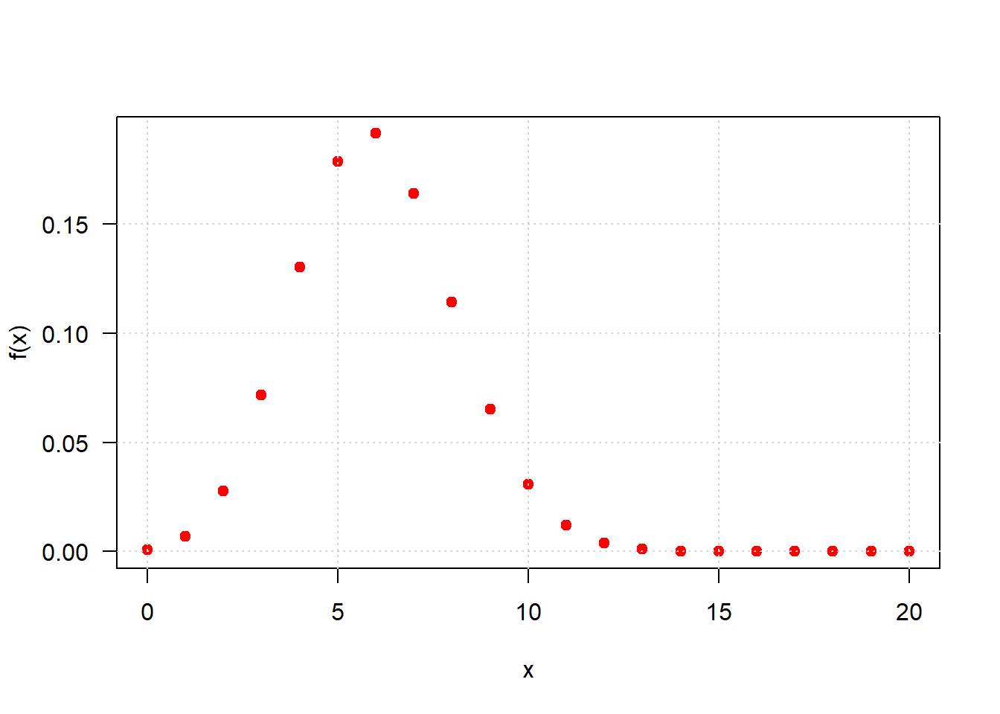
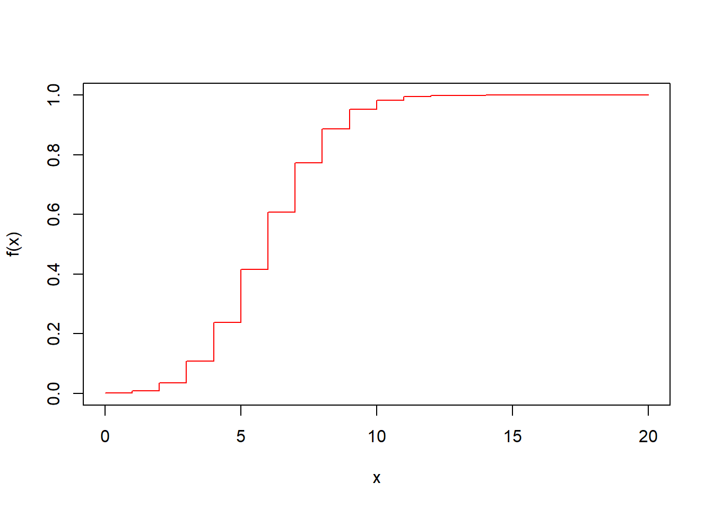
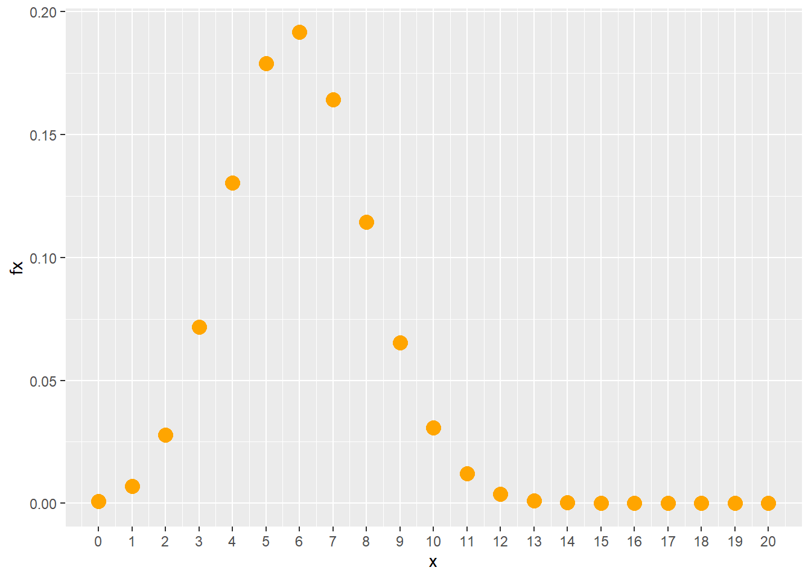
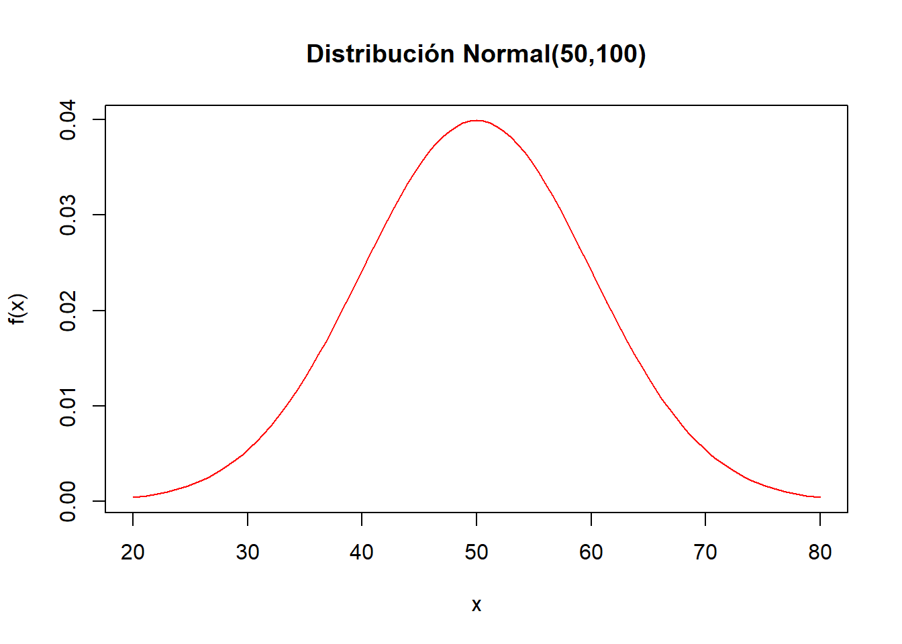
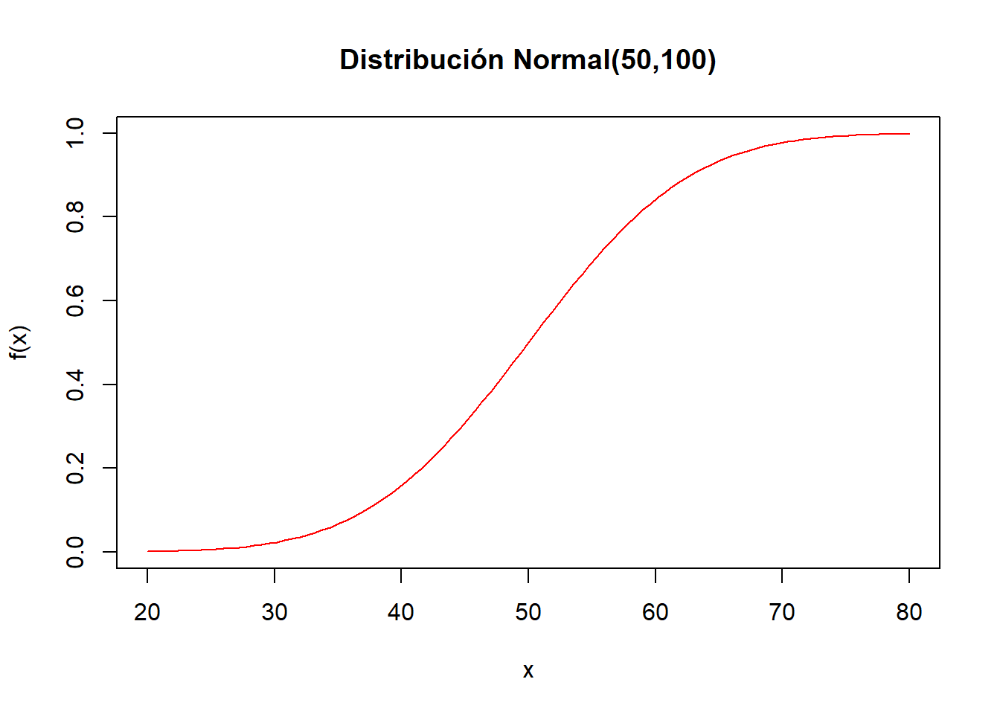
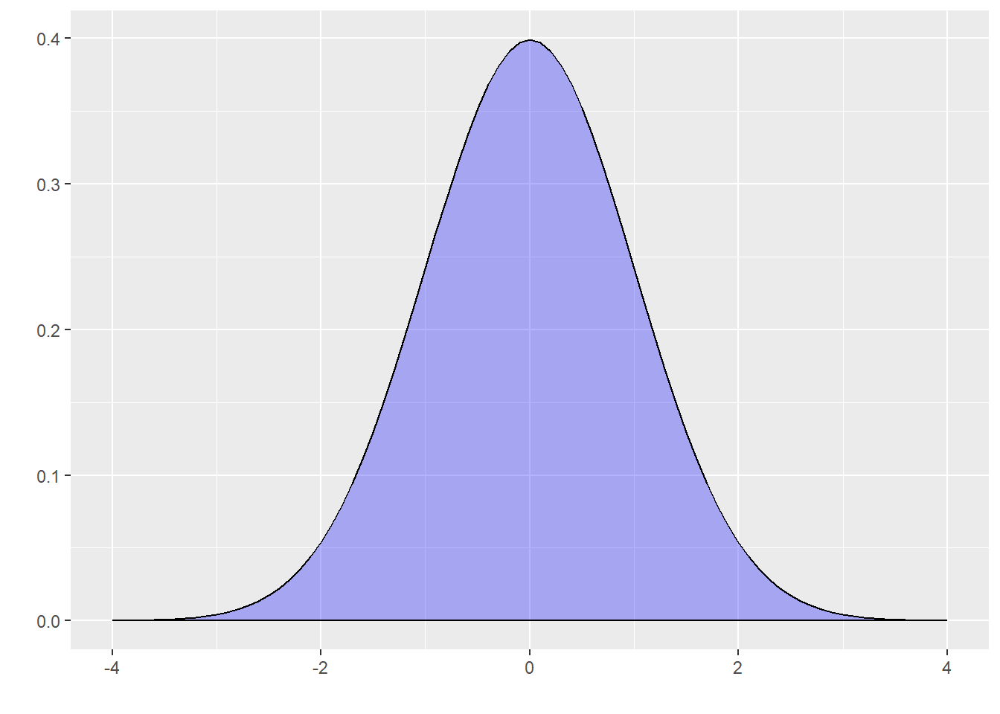
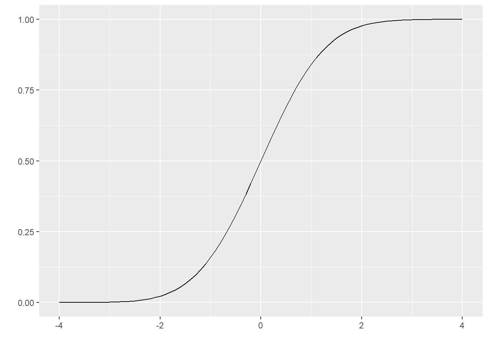
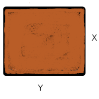
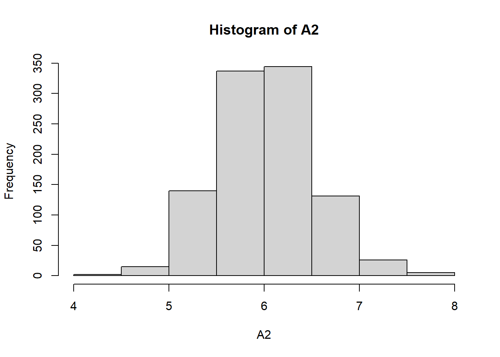
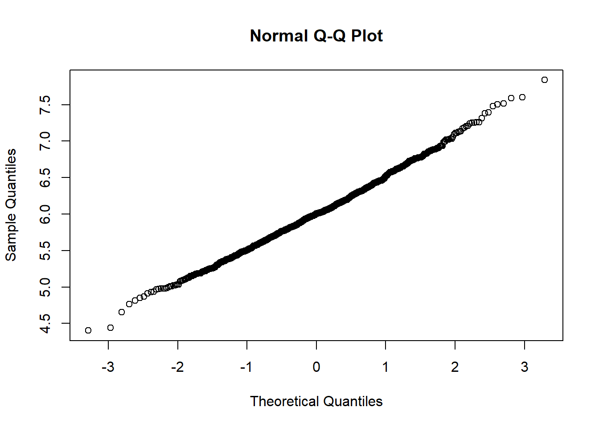

Existe un grupo de modelos identificados para las variables aleatorias tanto discretas como continuas que son utilizadas con frecuencia en diferentes contextos. A continuación se relacionan los principales modelos:
En \(R\) los nombre de las funciones diseñadas para los cálculos requeridos están conformadas por dos partes:
La primera parte es una letra que identifica el propósito de la
función.
d : función de distribución de probabilidad \(f(x)= P(X=x)\), para el caso discreto. En el caso de las variables continuas representa la función de densidad de probabilidad \(f(x)\)
p : función de probbilidad acumulada \(F(x) = P(X \leq x)\)
q : percentil \(X_p\)
r : generador de números aleatorios
La siguiene tabla presenta estas las funciones para los principales modelos tanto discretos como continuos
| modelo | \(F(x)\) | \(X_{p}\) | \(f(x)\) | aleatorio |
|---|---|---|---|---|
| binomial | pbinom | qbinom | dbinom | rbinom |
| gometrico | pgeom | qgeom | dgeom | rgeom |
| hipergeometrico | phyper | qhyper | dhyper | rhyper |
| Poisson | ppois | qpois | dpois | rpois |
| binomial negativo | pnbinom | qnbinom | dnbionom | rnbinom |
| beta | pbeta | qbeta | dbeta | rbeta |
| Cauchy | pcauchy | qcauchy | dcauchy | rcauchy |
| exponencial | pexp | qexp | dexp | rexp |
| gamma | pgamma | qgamma | dgamma | rgamma |
| lognormal | plnorm | qlnorm | dlnorm | rlnorm |
| uniforme | punif | qunif | dunif | runif |
| Weibull | pweibull | qweibull | dweibull | rweibull |
| t-Student | pt | qt | dt | rt |
| Ji-cuadrado | pchisq | qchisq | dchisq | rchisq |
| F | pf | qf | df | rf |
En R los nombres de las funciones diseñadas para los cálculos requeridos están conformadas por dos partes: la primera parte con el propósito de la función (primera letra) y la segunda parte hace referencia al modelo a utilizar (d binom para el calculo de probabilidad de una variable aleatoria con distribución binomial)
En cada caso si no recuerda las sintaxis de la función puede hacer uso de las ayudas de R así:
help("pbinom")| p | función de distribución acumulada \(F(x)\) |
| q | percentil |
| d | densidad de probabilidad \(P(X=x)\) |
| r | variable aleatoria |
Sea una variables con distribución binomial con parámetros \(n=20\) y \(p=0.30\) , lo cual se puede simbolizar como : \(X\sim b(x; 20,0.30)\)|
En este caso se requieren realizar los siguientes procesos:
dbinom(7, 20, 0.30)[1] 0.164262pbinom(7, 20, 0.30)[1] 0.7722718x=0:20 # Genera secuencia 0 al 20
fx=dbinom(x, 20, 0.30) # Evalúa f(x)
fx=round(fx,4) # Redondea a 4 decimales
Fx=pbinom(x, 20, 0.30) # Evalúa en F(x)
Fx=round(Fx,4) # Redondea a 4 decimalesrbinom(15,20,0.30) [1] 7 3 6 4 8 4 7 7 13 7 6 7 6 10 6plot(x,dbinom(x,20,0.30), pch=19,las=1,
ylab="f(x)", col="red")
grid()
x=0:20
plot(x,pbinom(x,20,0.30), pch=19, "s",
ylab="f(x)", col="red")
library(ggplot2)
x=0:20
fx=dbinom(x,20,0.30)
dat=data.frame(x,fx)
ggplot(dat) + geom_point(aes(x, fx),colour = "orange", size = 4) +
scale_x_continuous(limits = c(0, 20),
breaks = 0:20,
labels = c('0','1','2','3','4','5','6','7','8','9','10','11','12','13','14', '15','16','17','18','19','20'))
Ahora supongamos que se tiene una variable continua con distribución normal, con media 50 y varianza 100, es decir desviación estándar 10, lo cual se puede representar como \(X\sim N(50,100)\). |
En este caso vamos a hallar los siguientes valores:
pnorm(70,50,sqrt(100))[1] 0.9772499pnorm(70,50,sqrt(100),lower.tail=FALSE)[1] 0.02275013rnorm(10,70,sqrt(100)) [1] 72.74056 75.87758 66.32439 82.79516 68.25935 49.92278 81.88509 76.64930
[9] 64.58812 68.04566curve(dnorm(x,50,sqrt(100)), from=20, to=80,
col="red", main="Distribución Normal(50,100)",
ylab="f(x)")
curve(pnorm(x,50,sqrt(100)), from=20, to=80,
col="red", main="Distribución Normal(50,100)",
ylab="f(x)")

# install.package("ggfortify")
library(ggfortify)
ggdistribution(pnorm, seq(-4, 4, 0.1), mean = 0, sd = 1)
Por otro lado el proceso de simulación de variables estadísticas esta relacionado con los experimentos llamados de Montecarlo, a continuación se describe brevemente su origen.
Es un método no determinista o estadístico numérico, usado para aproximar expresiones matemáticas complejas y costosas de evaluar con exactitud. El método se llamó así en referencia al Casino de Montecarlo (Mónaco) por ser “la capital del juego de azar”, al ser la ruleta un generador simple de números aleatorios. El nombre y el desarrollo sistemático de los métodos de Montecarlo datan aproximadamente de 1944 y se mejoraron enormemente con el desarrollo de la computadora.
El uso de los métodos de Montecarlo como herramienta de
investigación, proviene del trabajo realizado en el desarrollo de la
bomba atómica durante la Segunda Guerra Mundial en el Laboratorio
Nacional de Los Álamos en EE. UU. Este trabajo conllevaba la simulación
de problemas probabilísticos de hidrodinámica concernientes a la
difusión de neutrones en el material de fisión. Esta difusión posee un
comportamiento eminentemente aleatorio.
(tomado de Wikipedia)
Como ejemplo se presentan los siguientes problemas tomados de Navidi.
Se fabrican placas rectangulares cuyas longitudes en pulgadas se distribuyen como \(N(2.0; 0.01)\) y cuyos anchos se distribuyen \(N(3.0; 0.04)\). Suponga que las longitudes y los anchos son independientes. El área de una placa esta dada por \(A=XY\).

Solución
X2=rnorm(1000,mean=2.0,sd=0.1) # Generación de números aleatorios de X
Y2=rnorm(1000,mean=3.0,sd=0.2) # Generación de números aleatorios de Y
Z2=data.frame(X2,Y2) # Generación de matriz de X,Y
A2=apply(Z2,1,prod) # Área de la placa A=XY
mediaA=mean(A2) # Media del vector de áreas
varianzaA=var(A2) # Varianza del vector de áreas
B2=as.numeric(A2>5.9 & A2<6.1) # Generación de variable de 0,1. Con valor de 1 cundo se cumple la condición y cero en otros casos
Pro3c=sum(B2)/1000 # Calculo de la probabilidad
hist(A2) # Histograma del valor de las áreas
qqnorm(A2) # Gráfico de normalidad del área
summarytools::descr(A2)Descriptive Statistics
value
N: 1000
value
----------------- ---------
Mean 6.01
Std.Dev 0.51
Min 4.40
Q1 5.68
Median 6.00
Q3 6.33
Max 7.84
MAD 0.49
IQR 0.65
CV 0.08
Skewness 0.21
SE.Skewness 0.08
Kurtosis 0.15
N.Valid 1000.00
Pct.Valid 100.00